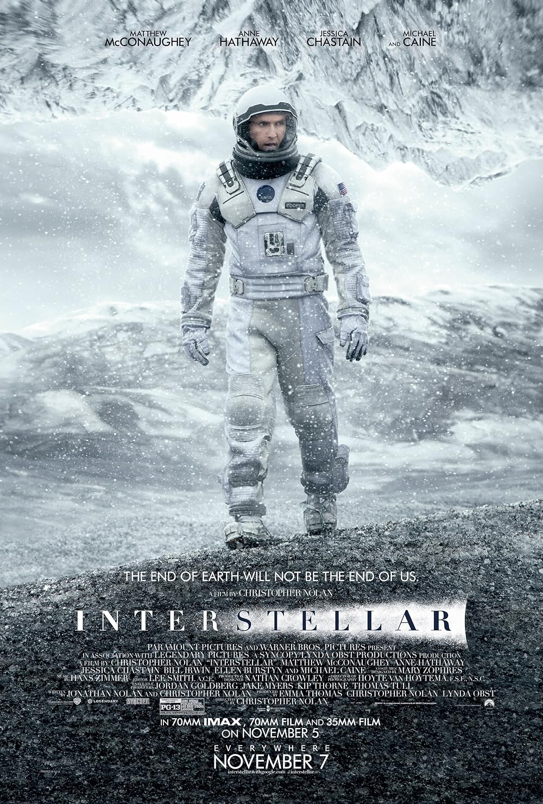

Hot
星際效應
“Love is the one thing that transcends time and space.”
（愛，是唯一可以超越時間與空間的事物。）
//
由克里斯多福·諾蘭所執導與監製馬修麥康納、安海瑟薇、潔西卡雀絲坦、麥特戴蒙等所主演。
內容主要講述在地球環境惡化、面臨滅亡的未來，人類為尋找適合移居的星球，派出太空探索隊穿越蟲洞。主角庫珀在旅途中經歷時間與空間的挑戰，最終進入五維空間，通過重力訊號將拯救地球的重要數據傳給女兒墨菲。墨菲在成年後成功解決了重力方程式，讓人類得以離開地球，前往太空中的新家園。庫珀則在五維空間被解救，最終與年邁的墨菲重逢，但她鼓勵他繼續探索宇宙，追尋自己的使命。
影片結合了親情、宇宙探索與時間相對論，展現震撼的視覺效果與深刻情感，被譽為經典科幻佳作。
作品評分：9/10
作品年份：2014